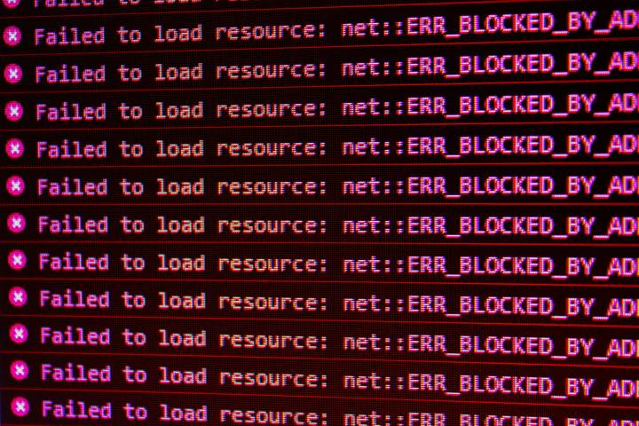
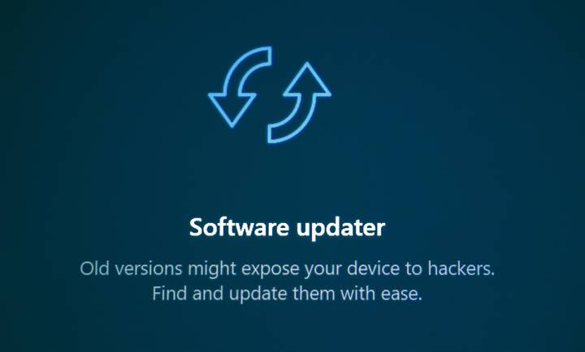
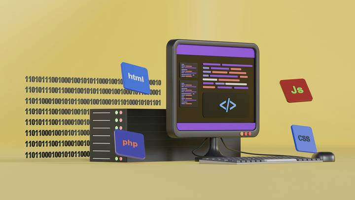
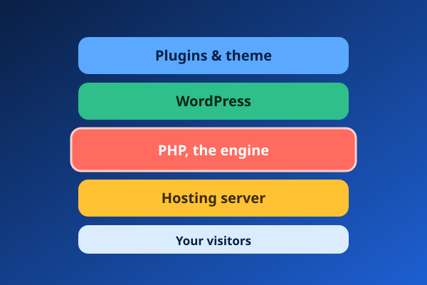

Why updating WordPress isn't enough against the new PHP bugs
Two critical flaws in PHP itself were fixed on 21 October. Here is what they mean for your website, who is responsible for the fix, and what to do today. With diagrams.
Two serious flaws nicknamed "PHP2Shell" were fixed in emergency PHP updates on 21 October 2026. They can let attackers run their own commands on a web server without even logging in, and updating WordPress or your plugins does not close them. I help businesses check their servers, update PHP safely, and close the gaps before attackers find them.
Fixed in PHP 8.2.35, 8.3.36, 8.4.27 and 8.5.12. Not sure which one your site runs? The guide shows you how to check in a minute.
Some problems can't be fixed from your WordPress dashboard. They live in the server underneath your site. That's the layer I work on.
The software your hosting runs, especially PHP, needs its own updates. I check what your server is running and bring it up to a safe, supported version.
Careful updates to WordPress itself, your theme and your plugins, with a backup first and a test before anything goes live.
Protection that works before something goes wrong, so problems are blocked or spotted early.
I'll tell you what your site runs, who is responsible for updating it, and what to do next.
Tap the ones that sound like yours. You can pick more than one, then continue to a short report form.
None of these? Describe it in your own words.
Don't want to wait for a breakdown? Monthly care keeps your site healthy. I handle support and upkeep only. I don't build new websites or do design work, which is why I'm quick at repairs.
Updates to WordPress, plugins and themes, done carefully and only after a backup, so nothing breaks.
Regular scans for hackers and harmful code, and fixes for weak spots.
Saved copies of your site, tested so I know they actually restore.
Checks that your site is online and working, so I often spot trouble before you do.
Errors, clashes between add-ons, and things that stop working.
A simple summary of what I did and what's coming up. No confusing terms.
Use the report form. Say what you're seeing and what changed just before it started.
So if anything goes sideways, we can go straight back.
I trace the problem step by step instead of guessing.
I try the site as a visitor would, then send you a plain summary.
How I investigate problems, with the evidence and the fix. Each one opens as its own page.

An Elementor error looked like a simple version mismatch. Controlled tests showed a pirated plugin had injected spam and left a backdoor behind.

The update timing is a lead, not proof. How to read the logs, find the failing file and confirm the fix before naming a cause.

A vague "HTTP error" in WordPress traced to a one-megabyte limit on the server, with a second limit waiting behind it.
Plain-English explanations of what's happening to WordPress sites right now.

Two critical flaws in PHP itself were fixed on 21 October. Here is what they mean for your website, who is responsible for the fix, and what to do today. With diagrams.
I'm focused on systems built on custom software and WordPress portals. I love diagnosing website issues, troubleshooting plugin and theme conflicts, investigating server-side errors, and helping businesses keep their systems stable, secure and reliable.
Over the past 3½ years I've worked with clients on website projects and support needs. That has shaped how I work: understand the problem first, investigate the evidence, find the underlying cause, and fix it properly instead of hiding the symptoms.
This site is my portfolio, and a place where I write up my troubleshooting work.
3½ years · Freelancer
Support, maintenance, security, code refactoring and updates for WordPress websites. Investigating plugin and theme conflicts, PHP errors and server-side faults (Linux, Nginx, PHP-FPM, MariaDB), recovering broken and hacked sites, and keeping live sites updated and backed up.
Describe the problem and what changed just before it started. I'll reply with what I think is wrong and the next step. Hiring? Choose "Job or contract enquiry" on the form.